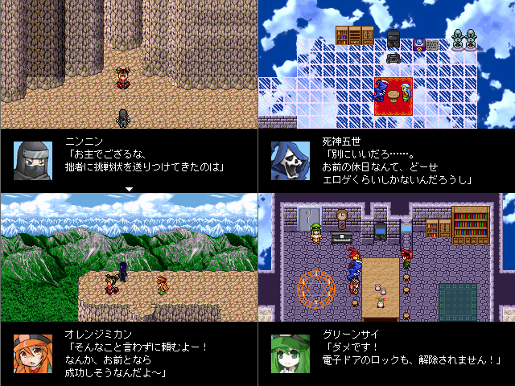

No.61-GW劇場版『偽幕田の逆襲～螺旋の天空城（ホワイトハウス）』

■GW劇場版『偽幕田の逆襲～螺旋の天空城（ホワイトハウス）』 終焉のああ
紹介文
～あらすじ～ ゴールデンウィークを満喫するもしも世界の住人たち。 しかしそんななか、『偽幕田』を名乗る謎の人物が各地の強キャラ相手に挑戦状を叩きつけ始めた。 彼女の実力は本物で、その戦いの全てを勝利……そしてなんと魔王軍四天王のアイツまで敗北してしまう！！ 自分の偽者を名乗る不届き物を放っておくわけにもいかず、幕田はひっそりと調査を始める。 彼女の正体とは！？ その目的とはいったい！？ そしてついには、偽幕田へ接触を図る謎の影が……！？ 2010年ゴールデンウィーク。 もしも対戦は今、一万フィートの天空へと舞台を広げるッ！！！！ ～～ なにか、色々とやっちまった感のある見るゲー もといｋｓｇです。 『劇場版』とか『逆襲』とかつけて新キャラたくさん出しとけば面白い作品ぽく見えるってお婆ちゃんが言ってたので、参考にしました！！ 新キャラの性格はけっこうフィーリングでｔｋってるから、合わなかったらごめんね！ 実はまだ完成してないんですけど、あえてSS投下します＞＜ 紅白のはまぁエターなったけど、今度こそ完成したら それはとっても嬉しいなって☆
管理人から一言: 偽幕田の脇にいる犯人といったい・・・ウゴゴゴゴ
© VIPRPG